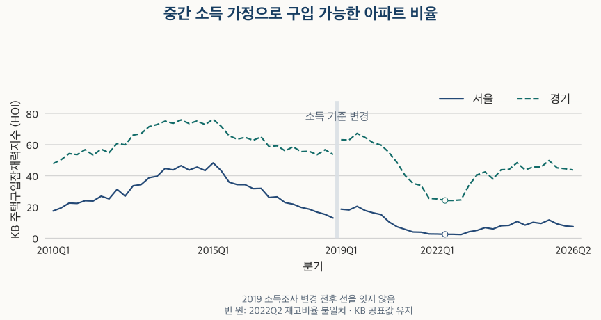

소득과 부담 · 주택구입잠재력
중간 소득으로 살 수 있는 아파트 비율은? 서울·경기 KB HOI 16년
서울·경기 KB 주택구입잠재력지수를 2010~2026년 분기로 비교합니다. 2019년 소득조사 변경, 구간별 최고·최저와 소득·금리 가정, 실제 매물·개인 구매력과의 차이를 확인합니다.
분석 기간 · 2010년 1분기~2026년 2분기 · 서울·경기 | 자료 기준일 · 2026-10-03
“중산층이 살 수 있는 서울 아파트가 몇 %뿐”이라는 기사를 읽으면 내 예산으로 가능한 집도 그만큼일 것 같습니다. 하지만 그 숫자는 특정 소득·자기자금·대출 조건을 넣어 계산한 KB 주택구입잠재력지수(HOI)입니다. 2026년 2분기 공표값은 서울 7.40, 경기 43.77입니다. 지금 나온 매물의 비율이나 개인의 대출 승인 가능성을 뜻하지는 않습니다.
주택구입잠재력지수는 무엇을 세나요?
KB 공식 설명은 구입 가능한 재고량을 전체 재고량으로 나눈 뒤 100을 곱한다고 설명합니다. HOI가 50이라면, 정해진 가정의 가구가 해당 지역 조사 재고의 가격별 하위 50% 범위에 접근할 수 있다는 뜻입니다.
분모는 기준일의 KB 아파트 시세 조사 대상 전체 재고입니다. 현재 매물로 나온 집의 수가 아닙니다. 구입 가능한 주택의 비율을 세었으므로, “그 지역 가구의 7.40%가 집을 살 수 있다”처럼 가구 비율로 바꿔 말해서도 안 됩니다.
지표 설명에는 ‘중위 소득’이라는 표현이 나오지만, 소득의 바탕은 도시 근로자 가구 소득 3분위입니다. 이 글에서는 이를 ‘중간 소득 가정’이라고 부릅니다. 서울이나 경기의 모든 가구를 직접 조사한 실제 중위소득, 개인의 월급, 주택담보대출 차주의 소득과 같다고 가정하지 않습니다.
가격 문턱도 고정돼 있지 않습니다. 6억 원 이하 아파트 재고는 같은 금액 상한을 적용하지만, HOI의 가격 한도는 소득과 금리 등 가정에 따라 바뀝니다. 가격을 소득으로 나눈 소득 대비 집값의 흐름과도 다른 질문입니다.
2026년 2분기에는 얼마짜리 집까지 계산에 들어가나요?
공표된 구입 가능 가격은 서울 약 5.01억 원, 경기 약 4.63억 원입니다. 같은 분기라도 기준 소득이 달라 가격 한도가 같지 않습니다. 아래 표는 각 구성값을 함께 보여 줍니다.
| 지역 | HOI | 월소득 | 연간 주거비 | 가격 한도 | 구입 가능 재고 | 조사 전체 재고 | 금리 |
|---|---|---|---|---|---|---|---|
| 서울 | 7.40 | 671.14 | 2,657.72 | 5.01 | 10.95 | 148.02 | 4.33 |
| 경기 | 43.77 | 620.46 | 2,457.01 | 4.63 | 129.76 | 296.46 | 4.33 |
서울은 조사 재고 약 148.02만 호 중 구입 가능 재고가 약 10.95만 호, 경기는 약 296.46만 호 중 약 129.76만 호입니다. 표의 재고량은 소수 둘째 자리로 반올림했으며 지수는 반올림 전 공표값을 사용했습니다.
경기의 가격 한도가 서울보다 낮은데도 HOI가 높은 것은 모순이 아닙니다. 각 지역에서 그 한도 이하에 놓이는 조사 재고의 비율이 다르기 때문입니다. 이것만으로 경기의 모든 생활권이나 특정 아파트가 더 적합한 선택이라고 판단할 수는 없습니다.
자기자금 30%도 가볍지 않은 조건입니다. 위 가격 한도에 단순 적용하면 서울 약 1.50억 원, 경기 약 1.39억 원이 됩니다. 이는 지표 안의 가정 계산이며, 실제 거래에 필요한 자기자금·대출액·부대비용을 개인별로 계산한 결과가 아닙니다.
2010년부터 같은 기준으로 비교할 수 있나요?
모든 분기 값을 볼 수는 있지만, 소득 기준이 바뀐 경계를 하나의 연속된 변화로 읽으면 안 됩니다. KB는 2019년 HOI부터 개편한 가계동향조사 소득을 적용했다고 밝힙니다. 이 때문에 아래 그림은 2010~2018년과 2019년 이후의 선을 잇지 않았습니다.

2018년 말에서 2019년 초 사이 값이 올라갔다고 그 차이를 전부 구매 여건 개선으로 설명할 수는 없습니다. 소득조사 변경이 함께 들어 있습니다. 2010년부터 2026년까지의 단일 증감률이나 하나의 ‘역대 최고·최저’ 대신, 같은 소득 기준 구간 안에서 비교합니다.
2026년은 2분기까지만 있습니다. 공식 화면의 ‘2026년 8월 업데이트’는 자료가 갱신된 월이며, ‘2026년 2분기’라는 관측 기간과 다릅니다. 이 글의 원자료 수집일은 2026년 10월 3일, 공식 화면 확인일은 10월 12일입니다.
가장 높고 낮았던 분기는 언제인가요?
조사 변경 전후를 나누면 다음과 같습니다. 같은 원값으로 최저가 여러 번 나타난 경우는 모두 표시했습니다. 소수 둘째 자리만 우연히 같은 경우를 동률로 처리하지 않았습니다.
| 지역·구간 | 최저 분기 | 최저 | 최고 분기 | 최고 |
|---|---|---|---|---|
| 서울 · 2010–2018 | 2018Q4 | 12.93 | 2015Q1 | 48.23 |
| 서울 · 2019–2026Q2 | 2022Q4 | 2.30 | 2019Q3 | 20.41 |
| 경기 · 2010–2018 | 2010Q1 | 47.80 | 2015Q1 | 76.23 |
| 경기 · 2019–2026Q2 | 2022Q2, 2022Q3 | 24.19 | 2019Q3 | 67.18 |
2019년 이후 서울의 최저는 2022년 4분기 2.30, 최고는 2019년 3분기 20.41입니다. 최신 2026년 2분기 7.40은 이 구간의 바닥보다는 높지만 최고 수준에는 못 미칩니다. 과거보다 높다는 사실이 지금이 매수 적기라는 신호는 아닙니다.
경기의 2019년 이후 최저는 공표값 기준 2022년 2·3분기 24.19입니다. 다만 2분기는 아래에서 설명할 재고비율 불일치가 있습니다. 그 분기를 제외해도 3분기가 남아 최저 수준은 같습니다. 서울과 다른 구간의 최고·최저 값과 시점은 이 제외 비교에서도 그대로입니다.
소득이 늘고 금리가 내리면 HOI는 반드시 오르나요?
감당 가능한 가격 한도와 그 이하의 재고 비율은 다른 단계입니다. 같은 조건이라면 소득이 늘어 상환에 쓸 수 있는 돈이 많아지거나 금리가 내려가면 가격 한도가 높아질 수 있습니다. 하지만 실제 아파트 가격 분포와 조사 재고도 함께 움직입니다.
HOI의 연간 주거비 가정은 월소득의 12개월분 중 33%입니다. 최신 서울 값으로는 월소득 약 671.14만 원에서 연간 약 2,657.72만 원을 주거비에 쓸 수 있다고 놓습니다. 여기에 금리와 20년 상환, 자기자금 30% 가정을 적용한 구입 가능 가격이 별도로 공표됩니다.
| 지역·분기 | 월소득 | 금리 | 가격 한도 | HOI |
|---|---|---|---|---|
| 서울 2026Q1 | 678.67 | 4.32 | 5.07 | 7.84 |
| 서울 2026Q2 | 671.14 | 4.33 | 5.01 | 7.40 |
| 경기 2026Q1 | 608.76 | 4.32 | 4.55 | 44.54 |
| 경기 2026Q2 | 620.46 | 4.33 | 4.63 | 43.77 |
2026년 1분기에서 2분기로 갈 때 서울은 기준 월소득이 678.67만 원에서 671.14만 원으로 줄고, 금리는 4.32%에서 4.33%로 올랐습니다. 구입 가능 가격은 약 5.07억 원에서 5.01억 원으로, HOI는 7.84에서 7.40으로 낮아졌습니다.
같은 기간 경기는 월소득이 608.76만 원에서 620.46만 원으로 늘어 가격 한도가 약 4.55억 원에서 4.63억 원으로 높아졌습니다. 그런데 HOI는 44.54에서 43.77로 낮아졌습니다. 가격 한도가 올라가도 그 아래에 있는 조사 재고의 비율은 줄 수 있습니다.
이 비교는 공표 구성값의 방향을 나란히 읽은 것입니다. 금리·소득이 HOI 변화의 몇 %를 일으켰는지 분해하지 않았습니다. 가격 분포와 조사 재고의 변화까지 같은 조건으로 고정한 분석이 아니므로, 한 변수의 효과로 단정할 수 없습니다.
지수를 재고량으로 나눠 확인하면 항상 같나요?
보유한 132개 지역·분기 중 130개는 반올림 범위에서 일치하지만, 2022년 2분기 서울·경기 두 값은 다릅니다. 현재 공식 화면도 보유 원본과 같은 공표 지수를 보여 줍니다.
| 지역 | 공표 HOI | 재고량으로 계산한 비율(%) | 차이(%포인트) |
|---|---|---|---|
| 서울 | 2.45 | 2.76 | +0.30 |
| 경기 | 24.19 | 26.05 | +1.86 |
이 글은 공표 지수를 임의로 재고비율 계산값으로 바꾸지 않았습니다. 반대로 두 값이 모두 같은 숫자인 것처럼 설명하지도 않습니다. 과거 기사에서 본 값과 현재 보유 자료가 다를 때는 버전과 확인 시점을 함께 봐야 합니다. 불일치가 생긴 원인은 확인하지 못했습니다.
차트는 해당 분기를 빈 원으로 표시했고, 최고·최저는 그 분기를 뺀 경우도 확인했습니다. 원천이 공표한 값, 그 값으로 다시 계산한 값, 아직 설명하지 못한 차이를 구분하는 것이 이 지표를 읽는 데 필요한 조건입니다.
내가 집을 살 수 있는지 판단할 때는 어떻게 쓰나요?
- 내 소득과 지표의 기준 소득을 구별하세요. 가구 구성과 소득, 보유 자산과 기존 부채가 다르면 같은 조건이 아닙니다.
- 자기자금과 월 부담을 따로 계산하세요. 30%·33%·20년은 지표 가정이며 개인에게 적용되는 대출 규정이나 승인 조건이 아닙니다.
- 실제 후보의 조건을 확인하세요. 구입 가능 재고 비율이 높아도 원하는 생활권·면적·상태의 매물이 충분하다는 뜻은 아닙니다.
- 비교 시점을 맞추세요. 2019년 소득조사 변경, 관측 분기와 공표 시차, 2022년 2분기 불일치를 함께 확인합니다.
가장 강한 반론은 “저렴한 집이 많아도 내가 살고 싶은 집이 아니면 의미가 없다”는 것입니다. 맞습니다. HOI는 그 조건을 해결하지 않습니다. 다만 같은 가정에서 소득과 금융 비용, 가격 분포가 만드는 접근 가능한 재고의 범위를 이해하는 데 도움을 줍니다. 개인에게 가능하거나 불가능한 선택을 이 숫자 하나로 확정하지 마세요.
자료·계산 방법·전체 분기표와 한계
원천은 KB 주택구입잠재력지수입니다. 서울·경기 2010년 1분기~2026년 2분기의 7개 항목을 사용했습니다. 소득·주거비·가격 원단위는 만원, 재고는 만호, 금리는 %입니다. 위 요약 표의 가격은 억 원으로 환산했으며 아래 전체 표는 원단위 만원을 유지합니다. 표시값은 원본 소수값을 마지막에 소수 둘째 자리로 십진 반올림했습니다. 반올림 경계에서는 KB 화면과 마지막 자리가 다를 수 있습니다.
공식 정의의 소득은 도시 근로자 가구 소득 3분위, 대출금리는 한국은행 예금은행 신규취급액 기준 가중평균 주택담보대출금리, 주택 가격은 KB시세 일반 거래가입니다. 지역 소득의 세부 추정 과정을 독립 재현한 것은 아닙니다. 전국 공통 소득이나 차주 소득으로 대체하지 않았습니다. 2019년에는 새 가계동향조사 소득이 적용됐고, KB 화면에는 2022년 11월 통계 개편 전후 일부 지표 차이 안내도 있습니다.
소득자료 발표 시차 때문에 분기 말 월 표시는 발표일이 아닙니다. 현재 확인한 과거 값이 당시 이용할 수 있었던 정보와 같다는 보장은 없습니다. 현재 대출 규정이나 개인별 신용 심사를 이 지수로 재현하지 않았습니다.
원본을 서로 다른 방법으로 읽어 보유 통계와 대조했고, 924개 측정값 모두가 공식 화면 표시값의 반올림 범위 안에 있음을 확인했습니다. 구간별 최고·최저와 동률을 따로 계산해 확인했습니다. 과거 값은 공표된 구성값을 그대로 사용했습니다. 서울 2015년 4분기에는 월소득×12×33%와 연간 주거비가 약 0.07만 원 다릅니다. 자체 연 단위 20년 상환 계산으로 가격 한도를 재산출하면 2015년 4분기·2017년 2분기 두 지역에서도 차이가 남습니다. KB의 실제 상환 일정과 세부 반올림을 전부 재현한 것이 아니므로, 이 계산으로 공표 가격을 고치지 않았습니다.
공표값과 비교 결과 전체 JSON에는 두 지역의 132개 관측, 구간별 극값과 산술 차이를 담았습니다. 개별 가구·대출자·주택·계약 기록은 결합하지 않았습니다.
서울 전체 분기
| 분기 | HOI | 월소득 | 연간 주거비 | 가격 한도 | 구입 가능 재고 | 조사 전체 재고 | 금리 |
|---|---|---|---|---|---|---|---|
| 2010Q1 | 17.45 | 422.43 | 1,672.83 | 28,090.64 | 20.98 | 120.28 | 5.70 |
| 2010Q2 | 19.41 | 403.48 | 1,597.77 | 28,884.56 | 23.54 | 121.29 | 4.82 |
| 2010Q3 | 22.54 | 422.98 | 1,674.99 | 30,410.37 | 27.55 | 122.23 | 4.77 |
| 2010Q4 | 22.29 | 415.95 | 1,647.16 | 30,111.08 | 27.41 | 122.95 | 4.69 |
| 2011Q1 | 24.02 | 439.83 | 1,741.71 | 31,406.22 | 29.63 | 123.35 | 4.85 |
| 2011Q2 | 23.84 | 440.01 | 1,742.43 | 31,338.82 | 29.47 | 123.63 | 4.88 |
| 2011Q3 | 26.91 | 462.06 | 1,829.77 | 32,686.51 | 33.29 | 123.71 | 4.96 |
| 2011Q4 | 25.21 | 451.60 | 1,788.34 | 31,865.20 | 31.33 | 124.26 | 4.99 |
| 2012Q1 | 31.32 | 487.14 | 1,929.08 | 34,256.57 | 38.83 | 124.01 | 5.03 |
| 2012Q2 | 26.95 | 449.10 | 1,778.44 | 32,068.35 | 33.49 | 124.24 | 4.85 |
| 2012Q3 | 33.60 | 469.62 | 1,859.71 | 34,708.79 | 41.82 | 124.45 | 4.45 |
| 2012Q4 | 34.36 | 461.03 | 1,825.68 | 34,856.27 | 42.86 | 124.74 | 4.19 |
| 2013Q1 | 38.76 | 475.15 | 1,881.60 | 36,305.49 | 48.37 | 124.80 | 4.07 |
| 2013Q2 | 39.73 | 466.59 | 1,847.68 | 36,548.70 | 49.77 | 125.26 | 3.79 |
| 2013Q3 | 44.73 | 491.94 | 1,948.07 | 38,500.06 | 56.06 | 125.32 | 3.80 |
| 2013Q4 | 43.77 | 487.05 | 1,928.72 | 38,219.95 | 55.19 | 126.10 | 3.77 |
| 2014Q1 | 46.50 | 506.59 | 2,006.11 | 39,931.85 | 58.87 | 126.59 | 3.72 |
| 2014Q2 | 43.69 | 484.49 | 1,918.56 | 38,499.12 | 55.47 | 126.97 | 3.63 |
| 2014Q3 | 45.59 | 494.59 | 1,958.59 | 39,730.06 | 58.27 | 127.83 | 3.51 |
| 2014Q4 | 43.40 | 474.99 | 1,880.98 | 38,749.14 | 55.46 | 127.79 | 3.34 |
| 2015Q1 | 48.23 | 504.84 | 1,999.18 | 41,791.13 | 62.19 | 128.95 | 3.18 |
| 2015Q2 | 43.36 | 474.58 | 1,879.34 | 40,090.78 | 56.13 | 129.47 | 2.96 |
| 2015Q3 | 35.92 | 448.73 | 1,776.95 | 37,976.86 | 46.83 | 130.38 | 2.94 |
| 2015Q4 | 34.34 | 448.00 | 1,774.15 | 37,665.24 | 44.94 | 130.86 | 3.02 |
| 2016Q1 | 34.32 | 454.22 | 1,798.71 | 38,158.45 | 45.12 | 131.49 | 3.02 |
| 2016Q2 | 31.78 | 441.52 | 1,748.41 | 37,645.52 | 41.72 | 131.28 | 2.86 |
| 2016Q3 | 31.94 | 447.66 | 1,772.74 | 38,671.20 | 42.16 | 132.01 | 2.72 |
| 2016Q4 | 26.07 | 435.93 | 1,726.29 | 36,621.93 | 34.76 | 133.34 | 3.02 |
| 2017Q1 | 26.49 | 448.17 | 1,774.74 | 37,065.35 | 35.55 | 134.17 | 3.19 |
| 2017Q2 | 22.83 | 436.99 | 1,730.47 | 36,041.44 | 30.76 | 134.77 | 3.23 |
| 2017Q3 | 21.82 | 448.79 | 1,777.22 | 36,846.26 | 29.32 | 134.40 | 3.27 |
| 2017Q4 | 19.75 | 443.56 | 1,756.52 | 36,053.66 | 26.60 | 134.70 | 3.38 |
| 2018Q1 | 18.61 | 451.17 | 1,786.62 | 36,406.09 | 25.09 | 134.79 | 3.46 |
| 2018Q2 | 16.69 | 441.59 | 1,748.71 | 35,601.36 | 22.54 | 135.08 | 3.47 |
| 2018Q3 | 15.24 | 464.43 | 1,839.15 | 37,818.64 | 20.67 | 135.61 | 3.36 |
| 2018Q4 | 12.93 | 454.88 | 1,801.33 | 37,380.35 | 17.77 | 137.46 | 3.26 |
| 2019Q1 | 18.57 | 503.49 | 1,993.82 | 42,064.07 | 25.71 | 138.45 | 3.08 |
| 2019Q2 | 18.10 | 502.10 | 1,988.31 | 42,731.38 | 25.13 | 138.82 | 2.88 |
| 2019Q3 | 20.41 | 516.41 | 2,044.97 | 45,370.27 | 28.41 | 139.17 | 2.54 |
| 2019Q4 | 17.72 | 506.42 | 2,005.42 | 44,787.91 | 24.51 | 138.29 | 2.47 |
| 2020Q1 | 16.21 | 512.58 | 2,029.81 | 45,204.31 | 22.52 | 138.95 | 2.50 |
| 2020Q2 | 15.11 | 527.56 | 2,089.12 | 46,393.61 | 21.03 | 139.15 | 2.53 |
| 2020Q3 | 10.40 | 519.86 | 2,058.66 | 46,151.42 | 14.54 | 139.79 | 2.43 |
| 2020Q4 | 7.32 | 507.10 | 2,008.12 | 44,552.80 | 10.24 | 139.94 | 2.54 |
| 2021Q1 | 5.61 | 509.68 | 2,018.32 | 44,234.92 | 7.86 | 140.01 | 2.67 |
| 2021Q2 | 3.95 | 507.26 | 2,008.75 | 43,819.63 | 5.53 | 140.22 | 2.72 |
| 2021Q3 | 3.82 | 562.41 | 2,227.14 | 47,775.18 | 5.36 | 140.10 | 2.90 |
| 2021Q4 | 2.70 | 536.22 | 2,123.42 | 43,229.90 | 3.78 | 139.95 | 3.47 |
| 2022Q1 | 2.63 | 559.17 | 2,214.30 | 43,527.95 | 3.69 | 139.94 | 3.86 |
| 2022Q2 | 2.45 | 582.70 | 2,307.48 | 44,998.15 | 3.86 | 140.20 | 3.95 |
| 2022Q3 | 2.45 | 577.16 | 2,285.55 | 42,730.67 | 3.44 | 140.25 | 4.43 |
| 2022Q4 | 2.30 | 567.61 | 2,247.73 | 40,948.83 | 3.22 | 140.26 | 4.73 |
| 2023Q1 | 4.09 | 599.72 | 2,374.91 | 44,094.16 | 5.74 | 140.31 | 4.51 |
| 2023Q2 | 4.96 | 609.87 | 2,415.07 | 45,907.02 | 6.98 | 140.75 | 4.24 |
| 2023Q3 | 6.76 | 651.23 | 2,578.88 | 48,721.54 | 9.58 | 141.75 | 4.31 |
| 2023Q4 | 5.90 | 623.93 | 2,470.78 | 46,314.37 | 8.40 | 142.44 | 4.40 |
| 2024Q1 | 7.95 | 638.82 | 2,529.73 | 49,288.46 | 11.35 | 142.73 | 3.96 |
| 2024Q2 | 8.20 | 631.74 | 2,501.70 | 49,221.38 | 11.75 | 143.26 | 3.85 |
| 2024Q3 | 10.74 | 663.38 | 2,626.97 | 52,952.52 | 15.45 | 143.88 | 3.58 |
| 2024Q4 | 8.38 | 653.22 | 2,586.74 | 49,343.19 | 12.11 | 144.49 | 4.20 |
| 2025Q1 | 10.16 | 677.90 | 2,684.47 | 51,117.55 | 14.73 | 144.91 | 4.22 |
| 2025Q2 | 9.45 | 655.64 | 2,596.35 | 50,721.40 | 13.85 | 146.51 | 3.93 |
| 2025Q3 | 11.68 | 700.62 | 2,774.46 | 54,056.73 | 17.16 | 146.90 | 3.96 |
| 2025Q4 | 9.17 | 673.20 | 2,665.88 | 51,166.68 | 13.49 | 147.20 | 4.13 |
| 2026Q1 | 7.84 | 678.67 | 2,687.53 | 50,729.87 | 11.59 | 147.70 | 4.32 |
| 2026Q2 | 7.40 | 671.14 | 2,657.72 | 50,123.50 | 10.95 | 148.02 | 4.33 |
경기 전체 분기
| 분기 | HOI | 월소득 | 연간 주거비 | 가격 한도 | 구입 가능 재고 | 조사 전체 재고 | 금리 |
|---|---|---|---|---|---|---|---|
| 2010Q1 | 47.80 | 369.87 | 1,464.70 | 24,595.58 | 86.23 | 180.39 | 5.70 |
| 2010Q2 | 50.32 | 351.00 | 1,389.95 | 25,127.64 | 91.81 | 182.47 | 4.82 |
| 2010Q3 | 54.24 | 367.96 | 1,457.13 | 26,454.99 | 99.74 | 183.90 | 4.77 |
| 2010Q4 | 53.58 | 361.85 | 1,432.92 | 26,194.62 | 99.28 | 185.28 | 4.69 |
| 2011Q1 | 56.76 | 382.62 | 1,515.18 | 27,321.31 | 105.46 | 185.81 | 4.85 |
| 2011Q2 | 53.23 | 371.69 | 1,471.90 | 26,473.09 | 99.90 | 187.67 | 4.88 |
| 2011Q3 | 57.07 | 390.32 | 1,545.68 | 27,611.54 | 107.63 | 188.62 | 4.96 |
| 2011Q4 | 54.82 | 381.49 | 1,510.68 | 26,917.75 | 104.14 | 189.95 | 4.99 |
| 2012Q1 | 60.80 | 411.51 | 1,629.57 | 28,937.83 | 116.18 | 191.10 | 5.03 |
| 2012Q2 | 59.87 | 396.38 | 1,569.67 | 28,303.94 | 114.88 | 191.90 | 4.85 |
| 2012Q3 | 66.07 | 414.50 | 1,641.40 | 30,634.43 | 127.48 | 192.95 | 4.45 |
| 2012Q4 | 67.04 | 406.91 | 1,611.37 | 30,764.59 | 130.44 | 194.59 | 4.19 |
| 2013Q1 | 71.55 | 419.38 | 1,660.73 | 32,043.69 | 139.68 | 195.22 | 4.07 |
| 2013Q2 | 72.89 | 411.82 | 1,630.79 | 32,258.35 | 142.40 | 195.35 | 3.79 |
| 2013Q3 | 75.03 | 424.71 | 1,681.86 | 33,238.85 | 147.11 | 196.07 | 3.80 |
| 2013Q4 | 73.66 | 420.49 | 1,665.15 | 32,997.01 | 146.37 | 198.71 | 3.77 |
| 2014Q1 | 75.83 | 437.36 | 1,731.96 | 34,474.98 | 151.76 | 200.13 | 3.72 |
| 2014Q2 | 73.52 | 418.28 | 1,656.38 | 33,238.03 | 148.07 | 201.40 | 3.63 |
| 2014Q3 | 75.15 | 430.46 | 1,704.62 | 34,578.33 | 152.39 | 202.78 | 3.51 |
| 2014Q4 | 72.85 | 413.40 | 1,637.07 | 33,724.59 | 148.83 | 204.30 | 3.34 |
| 2015Q1 | 76.23 | 439.38 | 1,739.95 | 36,372.14 | 157.86 | 207.08 | 3.18 |
| 2015Q2 | 71.81 | 413.04 | 1,635.65 | 34,892.27 | 149.88 | 208.72 | 2.96 |
| 2015Q3 | 65.71 | 392.61 | 1,554.73 | 33,227.47 | 138.80 | 211.24 | 2.94 |
| 2015Q4 | 63.48 | 387.56 | 1,534.73 | 32,582.37 | 135.35 | 213.24 | 3.02 |
| 2016Q1 | 64.68 | 397.42 | 1,573.77 | 33,386.35 | 138.83 | 214.62 | 3.02 |
| 2016Q2 | 62.77 | 386.30 | 1,529.76 | 32,937.57 | 135.54 | 215.92 | 2.86 |
| 2016Q3 | 64.94 | 395.30 | 1,565.37 | 34,147.55 | 142.06 | 218.76 | 2.72 |
| 2016Q4 | 58.70 | 384.94 | 1,524.35 | 32,338.00 | 129.88 | 221.27 | 3.02 |
| 2017Q1 | 59.25 | 395.74 | 1,567.14 | 32,729.55 | 131.87 | 222.56 | 3.19 |
| 2017Q2 | 55.99 | 385.87 | 1,528.04 | 31,825.42 | 125.45 | 224.04 | 3.23 |
| 2017Q3 | 58.55 | 404.04 | 1,599.99 | 33,171.79 | 132.88 | 226.94 | 3.27 |
| 2017Q4 | 55.49 | 399.33 | 1,581.35 | 32,458.23 | 127.47 | 229.72 | 3.38 |
| 2018Q1 | 55.73 | 406.17 | 1,608.45 | 32,775.52 | 129.94 | 233.17 | 3.46 |
| 2018Q2 | 53.53 | 397.56 | 1,574.32 | 32,051.04 | 126.41 | 236.14 | 3.47 |
| 2018Q3 | 56.73 | 418.12 | 1,655.75 | 34,047.20 | 136.09 | 239.90 | 3.36 |
| 2018Q4 | 53.66 | 413.06 | 1,635.71 | 33,943.44 | 130.87 | 243.90 | 3.26 |
| 2019Q1 | 63.09 | 457.20 | 1,810.50 | 38,196.52 | 155.02 | 245.70 | 3.08 |
| 2019Q2 | 62.96 | 455.93 | 1,805.50 | 38,802.47 | 156.61 | 248.75 | 2.88 |
| 2019Q3 | 67.18 | 471.85 | 1,868.52 | 41,455.66 | 168.18 | 250.33 | 2.54 |
| 2019Q4 | 64.59 | 462.72 | 1,832.39 | 40,923.54 | 162.77 | 252.00 | 2.47 |
| 2020Q1 | 61.20 | 468.35 | 1,854.67 | 41,304.02 | 155.20 | 253.62 | 2.50 |
| 2020Q2 | 59.70 | 482.04 | 1,908.87 | 42,390.70 | 152.59 | 255.58 | 2.53 |
| 2020Q3 | 54.88 | 481.18 | 1,905.45 | 42,716.86 | 141.90 | 258.57 | 2.43 |
| 2020Q4 | 48.48 | 469.36 | 1,858.68 | 41,237.21 | 126.52 | 260.99 | 2.54 |
| 2021Q1 | 40.25 | 471.75 | 1,868.11 | 40,942.99 | 104.88 | 260.60 | 2.67 |
| 2021Q2 | 35.08 | 469.51 | 1,859.26 | 40,558.60 | 91.99 | 262.21 | 2.72 |
| 2021Q3 | 33.82 | 520.55 | 2,061.40 | 44,219.78 | 88.72 | 262.36 | 2.90 |
| 2021Q4 | 25.54 | 496.31 | 1,965.39 | 40,012.76 | 67.06 | 262.56 | 3.47 |
| 2022Q1 | 25.16 | 517.19 | 2,048.08 | 40,260.47 | 66.13 | 262.86 | 3.86 |
| 2022Q2 | 24.19 | 538.96 | 2,134.27 | 41,620.30 | 68.60 | 263.39 | 3.95 |
| 2022Q3 | 24.19 | 533.83 | 2,113.98 | 39,523.03 | 63.71 | 263.35 | 4.43 |
| 2022Q4 | 24.54 | 521.56 | 2,065.39 | 37,627.05 | 64.72 | 263.70 | 4.73 |
| 2023Q1 | 34.11 | 551.07 | 2,182.26 | 40,517.23 | 90.59 | 265.61 | 4.51 |
| 2023Q2 | 40.57 | 560.39 | 2,219.16 | 42,183.04 | 108.99 | 268.67 | 4.24 |
| 2023Q3 | 42.52 | 584.15 | 2,313.22 | 43,702.55 | 115.58 | 271.86 | 4.31 |
| 2023Q4 | 37.97 | 559.66 | 2,216.26 | 41,543.35 | 104.04 | 274.02 | 4.40 |
| 2024Q1 | 43.87 | 573.01 | 2,269.13 | 44,211.07 | 120.61 | 274.93 | 3.96 |
| 2024Q2 | 44.08 | 566.66 | 2,243.99 | 44,150.90 | 122.14 | 277.09 | 3.85 |
| 2024Q3 | 48.39 | 595.04 | 2,356.36 | 47,497.68 | 135.75 | 280.50 | 3.58 |
| 2024Q4 | 43.75 | 585.93 | 2,320.27 | 44,260.16 | 123.83 | 283.01 | 4.20 |
| 2025Q1 | 45.64 | 608.06 | 2,407.93 | 45,851.73 | 129.92 | 284.65 | 4.22 |
| 2025Q2 | 45.61 | 588.10 | 2,328.89 | 45,496.39 | 131.62 | 288.58 | 3.93 |
| 2025Q3 | 49.77 | 628.45 | 2,488.65 | 48,488.14 | 144.91 | 291.14 | 3.96 |
| 2025Q4 | 45.10 | 603.85 | 2,391.26 | 45,895.81 | 132.00 | 292.69 | 4.13 |
| 2026Q1 | 44.54 | 608.76 | 2,410.68 | 45,503.99 | 130.91 | 293.92 | 4.32 |
| 2026Q2 | 43.77 | 620.46 | 2,457.01 | 46,338.13 | 129.76 | 296.46 | 4.33 |
분석·집필: 파파펭귄 (Nobot Kang). 에이전트로 공식 화면 확인·독립 산술 대조·초안 검토를 보조했습니다.